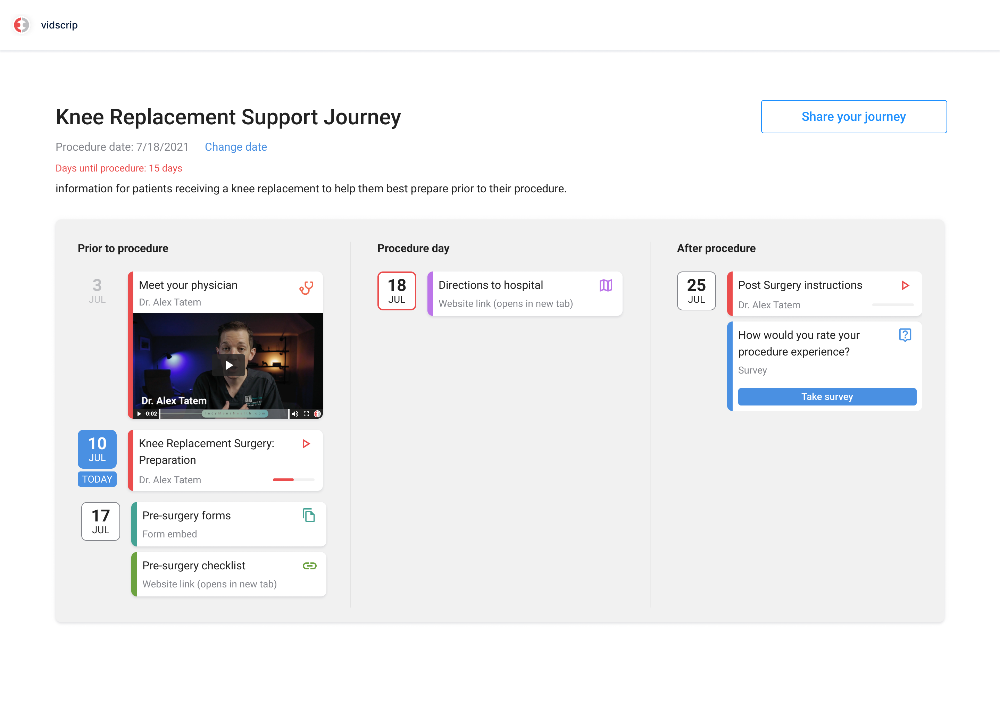
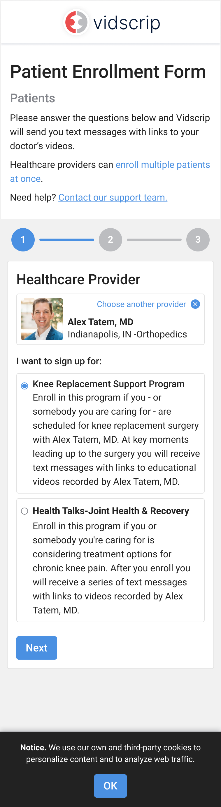
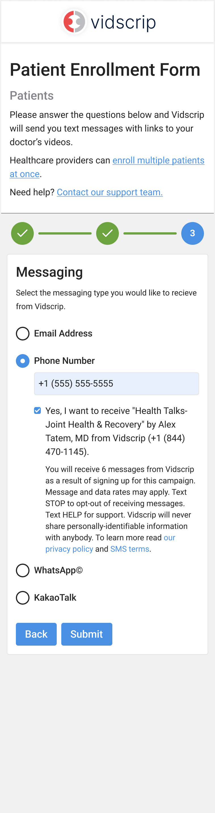

Vidscrip
Your doctor’s guidance, from preparation through recovery.
- Role
- Product design lead
- Studio and dates
- Foundry · 2021
- Scope
- Patient journey · Enrollment
I led product design at Foundry as we brought a patient’s scattered messages into one journey. We connected videos and questions to the procedure date, with enrollment and reminders leading back to a page patients could share.



A new procedure date reschedules the journey. The same page holds questions and satisfaction scores alongside the doctor’s videos.


Enrollment starts with the patient’s provider and program, then sets their reminder preferences. Messages lead back to one shareable page.